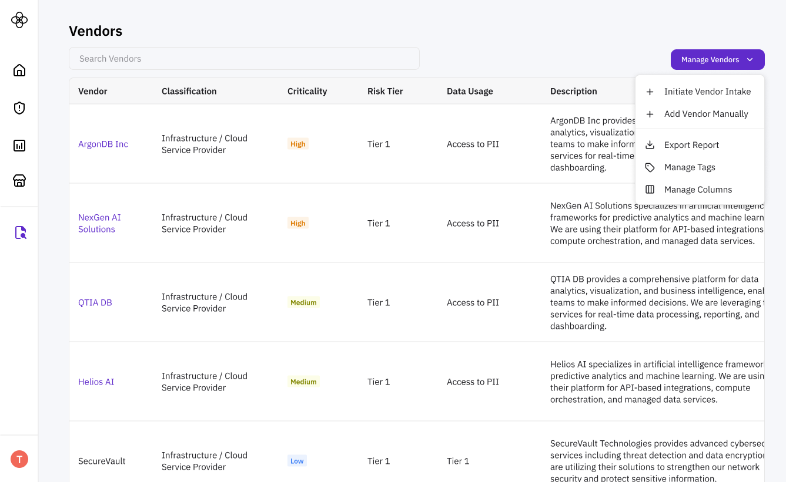
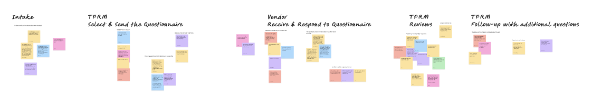
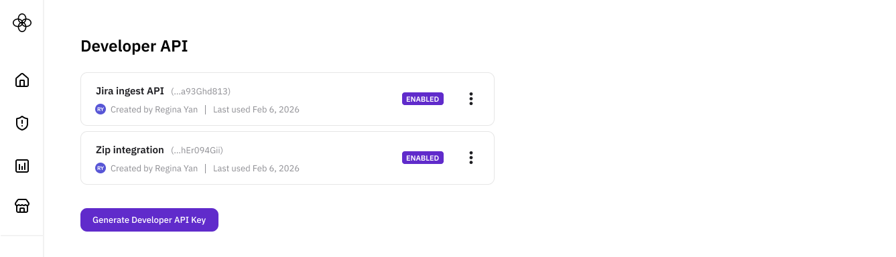

Back

As we ramped up design partnerships for our Due Diligence modules, two distinct TPRM profiles emerged:
Avery - emerging risk program manager
“I'm just getting started building our risk program. I don't know what 'good' looks like yet, and I'm hoping Clarative can be my one-stop shop for risk and compliance.”
Zakiah - mature risk program manager
“I already have a mature risk program and existing tools. I can't replace everything with Clarative (due to existing software contracts and overhead of change management), but Clarative's AI-forward tools like Due Diligence Evidence Review are compelling on their own.”
Avery was the clearer product-design anchor. But from a business perspective, we couldn't ignore Zakiah who had more budget and presented strong “land and expand” opportunities.
Design a Due Diligence suite that works as a fully interconnected workflow while still delivering value as standalone modules.
Sole designer, partnering closely with the Head of Engineering and CTO to consider both business and architectural implications.
Successfully converted trial users to paid customers across both user types.

Mapped end-to-end user journeys for both Avery and Zakiah
Audited existing tools and integration paths (especially critical for Zakiah)
We decided on a modular architecture: customers can “plug and play” the modules they need. This let us offer a cohesive, full-suite experience for Avery and Zakiah, create natural upsell paths for Zakiah, and maintain architectural flexibility as the product evolved. The challenge? Our data models and user-facing labels needed to be configurable enough for integrations, while still feeling coherent and opinionated within our own platform.
For example, on our Vendors page, we allowed users to manage table columns and views to accomodate different internal tags
Unified platform: We explored committing fully to an opinionated, seamless workflow. This would reduce configuration complexity and create a clear end-to-end experience, but it lacked the flexibility Zakiah required, and it presented risks if the all-in-one workflow didn't actually work for our Averys.
Composable workflows: We considered composable “blocks” users could assemble into custom workflows. While flexible, this risked turning us into an orchestration platform (which we explicitly wanted to avoid from a strategy/sales perspective). More importantly, it would alienate Avery for whom Clarative's value was providing a clear, ready-made definition of “what good looks like.”
Zakiah, in particular, needed flexibility in how they interacted with us:
This meant creating thoughtful on & off ramps for our modules, making it easy to import data, configure field labels to match internal terminology (“tier” vs. “classification” or “vendor” vs. “supplier” vs. “service provider”), and export the resulting work

We also built a developer API portal to support bidirectional data flow. Big shoutout to the engineering team here - I let them take a first pass at the designs given their knowledge of the use case, and I didn't need to make many changes!
1. When in doubt, choose flexibility
We chose the modular path because it gave us the most room to adapt later without heavy rework.
2. Users will use your product how they want, so watch them!
The beauty of modular architecture is that we aren't enforcing a perfect system. We're creating enough structure to guide Avery, while leaving space for Avery & Zakiah to show us what the product needs to become.
It was always fascinating what parts they would latch onto - for example, our AI document summarization and extraction features. We intentionally surfaced “chat with my documents” everywhere, then observed where users naturally reached for it. Their behavior guided where and how we more deeply and intentionally embedded AI chat into the workflow.